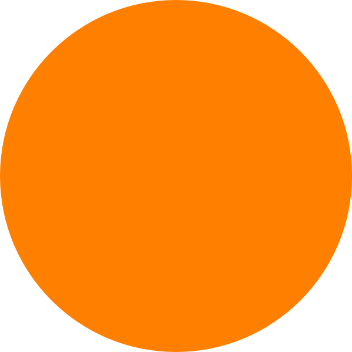

About me

Hi! My name's Andrew Thiessen, I'm a recent grad of Flatiron School's Software Engineering Immersive. I am a Full-Stack Web Developer that has an affinity for design and functionality above all else. Well versed in React, Ruby, Ruby on Rails, Node, JavaScript, jQuery, and HTML/CSS.
I was introduced to programming in the 7th grade when I decomipled Minecraft's source code, as I was curious how the game worked. I've always been interested in game development for as long as I can remember. I decided to make myself a little mod for fun which added new tools, armor, and crafting recipies for such items. It was very small and only had the basic set of tools, but a full set of armor. The mod actually recieved attention on the site i posted it on, PlanetMinecraft. As of a week after posting, January 17th 2013, the mod was on the front page of the mods category on the site, this made me so excited. Something I made was getting onto peoples games and they liked it! This is when I knew I would some day be a developer. Though it is for a far out of date version of Minecraft, you can view the mod here, it currently has nearly 3,000 downloads as of the beginning of 2020.